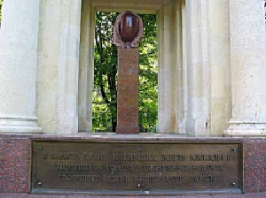
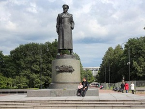

Памятник жертвам блокады Ленинграда
Памятник открыт 25 января 1995 г. В годы блокады Ленинграда в печах кирпичного завода, находившегося на территории юго-западной части будущего Московского парка Победы, сжигали умерших ленинградцев.

Памятник маршалу Жукову
В мае 1995 года был установлен памятник из бронзы Г.К. Жукову - маршалу Советского Союза, четырежды Герою Советского Союза.